Core · Video walkthrough
Configure resource costs and compare a call’s loaded cost
Create an operating-hour resource profile, associate labor and usage with a call, and verify estimated versus approved-input totals.
Before you begin
- Authorized Workforce access in a separate fictional training department.
- Existing workers, work entries and a disposable training unit; all example amounts are fictional.
Chapters
- Open resource profiles and choose the subject
- Configure straight-line depreciation
- Add consumption-based fuel cost and save
- Associate approved work hours with the call
- Find the call calculator and compare the first result
- Record two operating hours for the same call
- Recalculate and explain the resource contribution
- Compare an approved payroll input and review the result
- Adapt the exercise to department operations
Watch the walkthrough
Step 1
Open resource profiles and choose the subject
In Workforce, open Resource costs, then select Add resource profile. Choose Unit as the Subject type and select the fictional community van. Give the profile a clear Name and check its Effective and Expires dates. The saved example covers October through November and uses U S D. A resource profile prices the selected unit, asset or external resource class. Check that subject before applying rates to an operational resource.
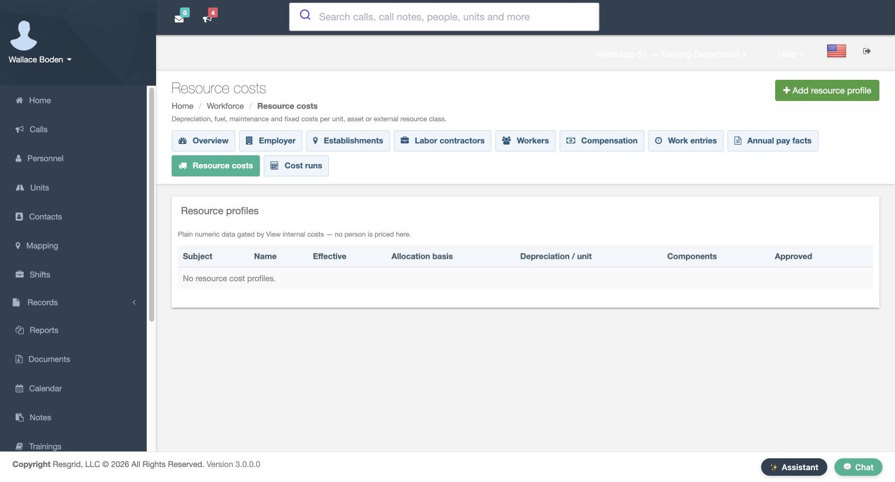
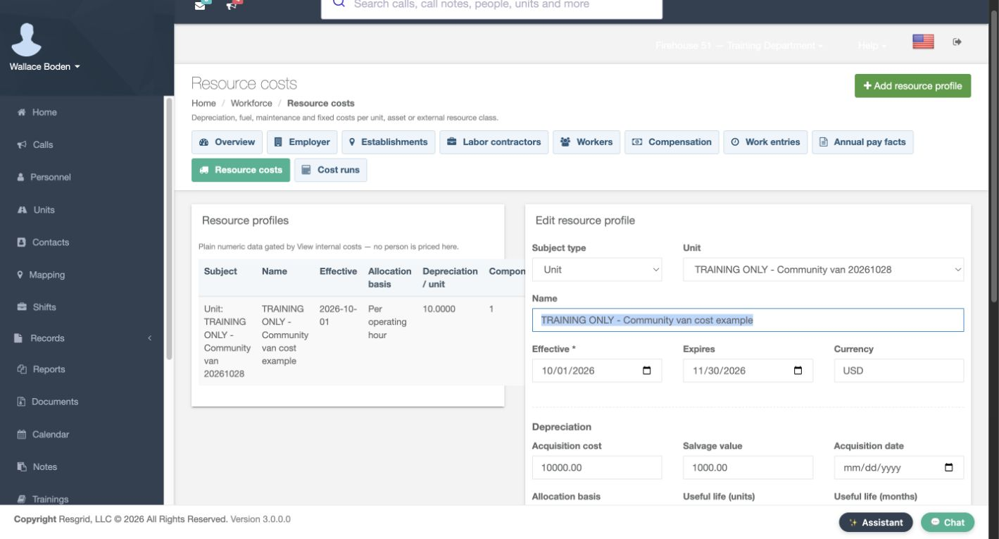
Practice
Open resource profiles and choose the subject
Step 2
Configure straight-line depreciation
In Depreciation, the example enters an Acquisition cost of ten thousand and a Salvage value of one thousand. Choose Per operating hour as the Allocation basis and enter nine hundred Useful life units. The form gives the straight-line formula: cost minus salvage, divided by life. These fictional inputs produce ten per operating hour. Expected annual utilization is six hundred. Use units that match the chosen basis; this software example does not prescribe an accounting policy.
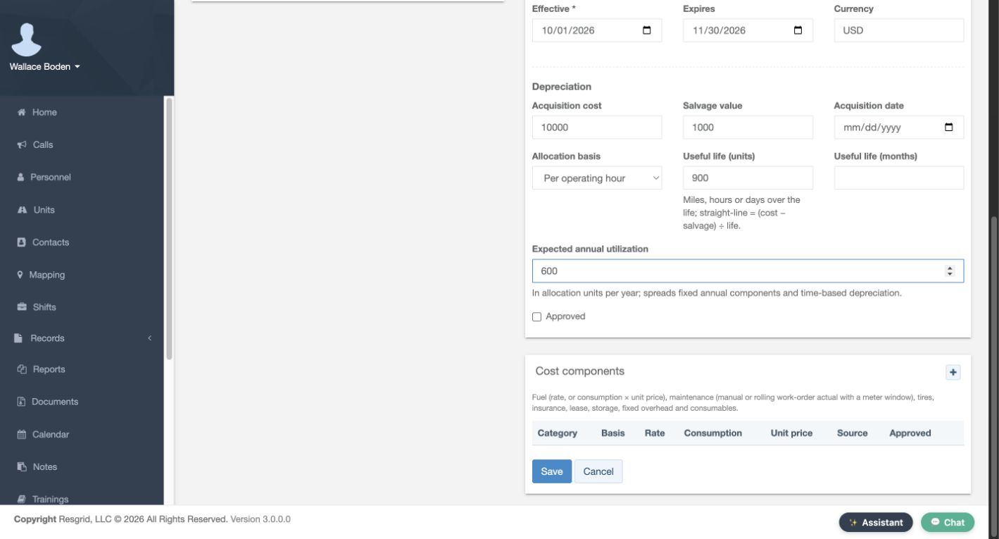
Practice
Configure straight-line depreciation
Step 3
Add consumption-based fuel cost and save
Add a Cost components row for Fuel or energy. Use the operating-hour basis, Consumption of two and Unit price of four, with Manual as the Source. That combination produces eight per operating hour. Mark the fictional component and profile Approved, then select Save. The saved profile row shows depreciation of ten and one component. Reopening lets you check the subject, dates, approval and component inputs instead of relying on an unsaved form.
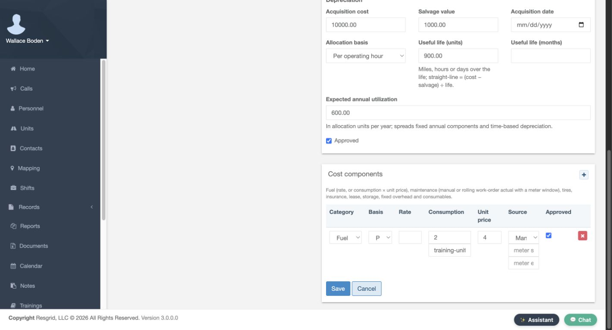
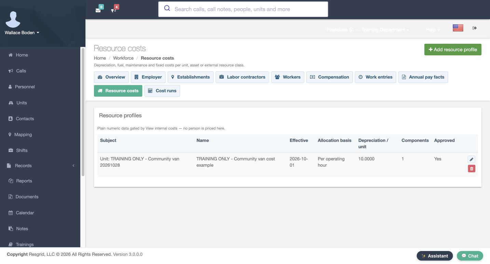
Practice
Add consumption-based fuel cost and save
Step 4
Associate approved work hours with the call
Open Work entries and add the fictional worker’s two Regular hours on November second. Enter the exercise call number, fifty-one thousand and one, in Call number. Keep the chosen establishment, identify the fictional source, and review Approved before Save. The saved row shows two hours, the call context and Yes. Associating hours with the correct call is essential: an approved work entry without that call relationship would not be the same call-cost input.
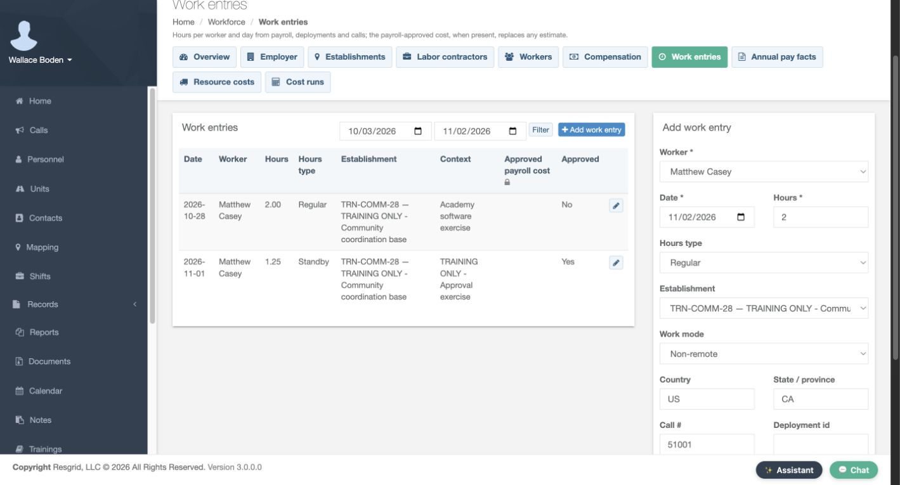
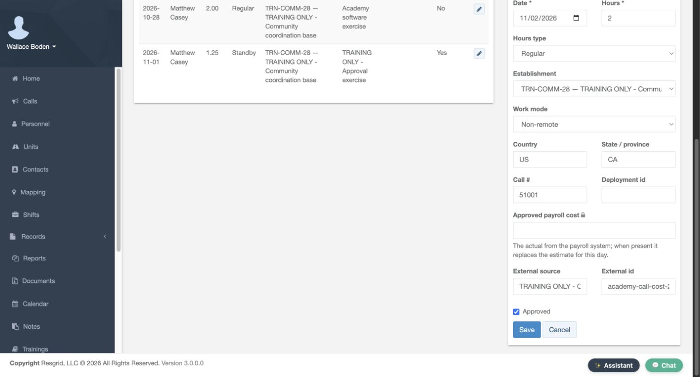
Practice
Associate approved work hours with the call
Step 5
Find the call calculator and compare the first result
Open Cost runs and find Call number with Calculate call cost. This control uses work entries and resource usage recorded against that call and supplies no revenue. The recording retains a before-and-after comparison from this exercise. Its first successful result shows fifty-four in Personnel, zero in Resources and fifty-four total. Two hours at the configured loaded estimate of twenty-seven explain the personnel amount. A zero resource result does not prove the vehicle cost nothing; first check whether usage was recorded.
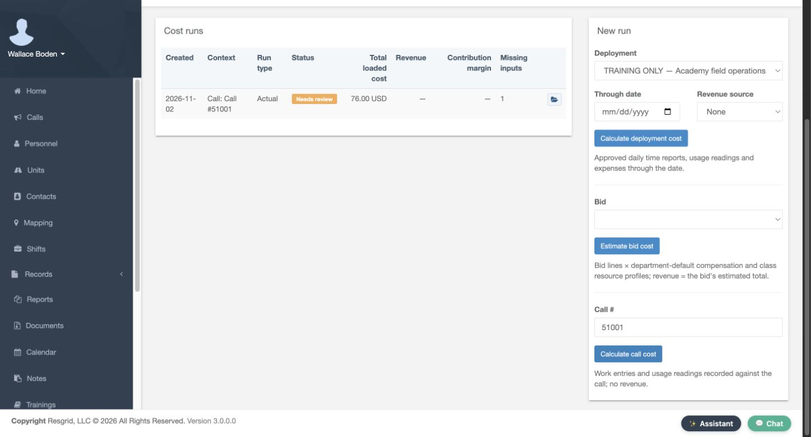
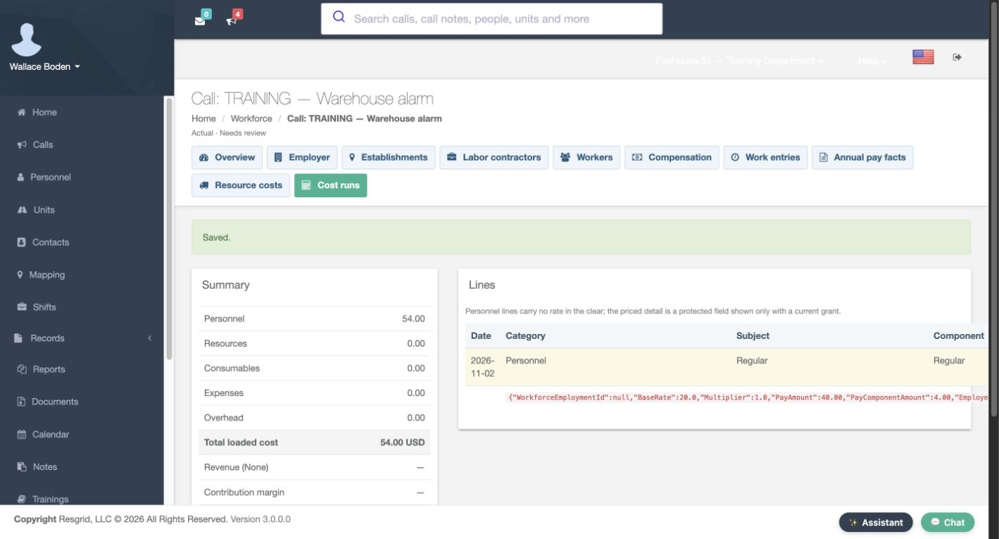
Practice
Find the call calculator and compare the first result
Step 6
Record two operating hours for the same call
From the cost result, open Resource usage and add a reading. Select the same community van, the exercise date, Incident as the Phase and Manual as the Source. Enter two Operating hours, then review Approved and Save. The saved usage row confirms two operating hours. This exercise uses operating hours, so it leaves odometer, engine-hour and fuel-quantity inputs empty. Match the recorded measurement to the allocation basis rather than entering the same work into several unrelated meter fields.
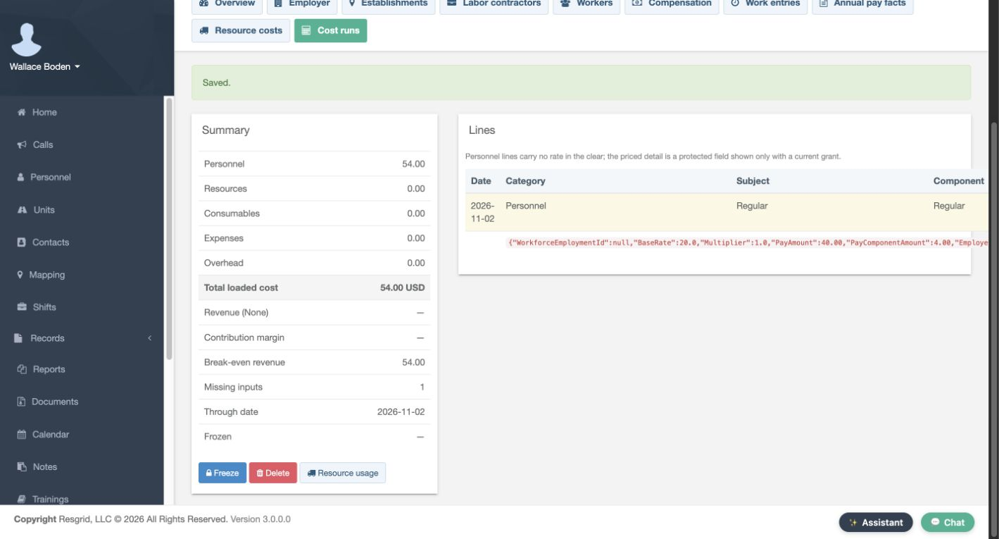
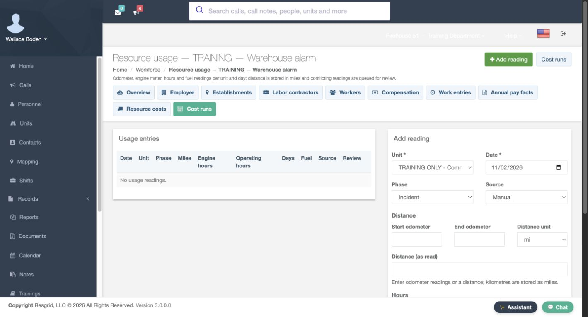
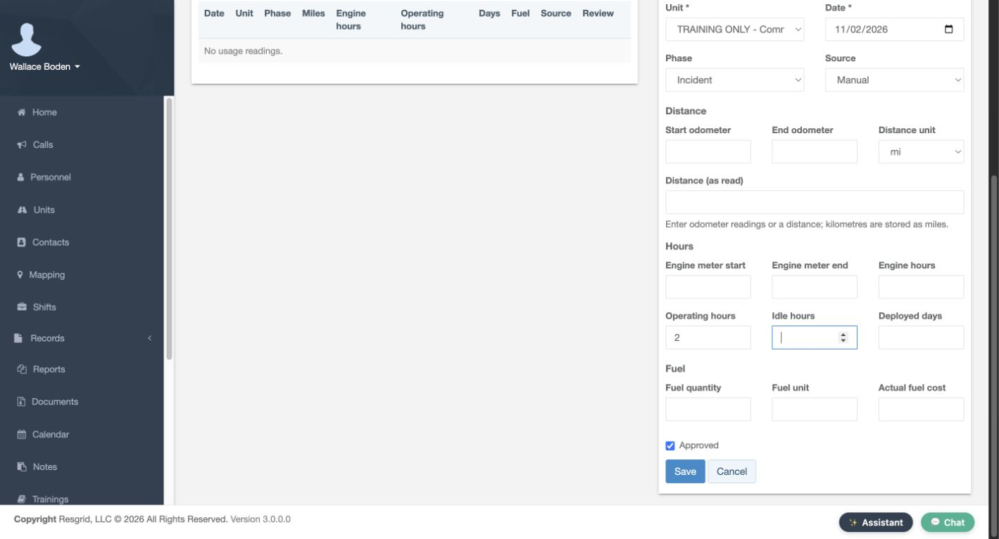
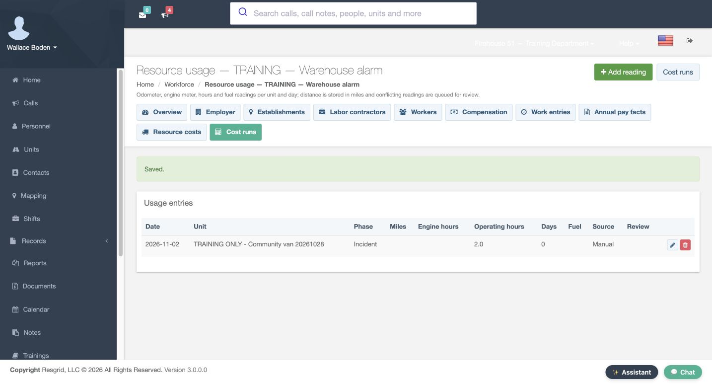
Practice
Record two operating hours for the same call
Step 7
Recalculate and explain the resource contribution
Recalculate the call after saving its usage. The recorded result now shows Personnel of fifty-four, Resources of thirty-six and a total of ninety. The resource contribution is twenty in depreciation plus sixteen in fuel or energy: two hours multiplied by ten and eight. Compare the input quantities and saved result together. A configured resource profile needs corresponding usage before this example contributes a resource amount.
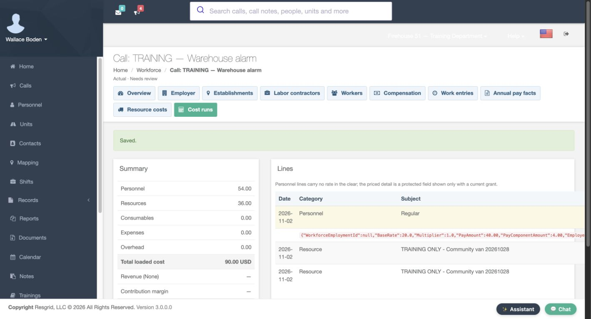
Practice
Recalculate and explain the resource contribution
Step 8
Compare an approved payroll input and review the result
Return to the same work entry and enter forty in Approved payroll cost, retaining a clearly fictional source. Save and verify forty on the work-entry row, then recalculate. Personnel becomes forty, Resources stays thirty-six and the total becomes seventy-six. The form explains that this approved payroll input replaces the estimate. No payroll system was contacted. The saved result still has one Missing input and is not Frozen; its index says Needs review. Inspect that state before using a total as a finished cost report.
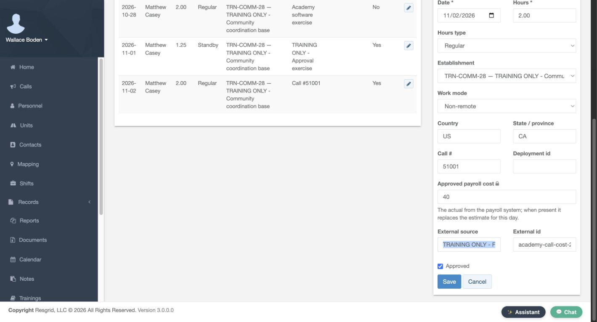
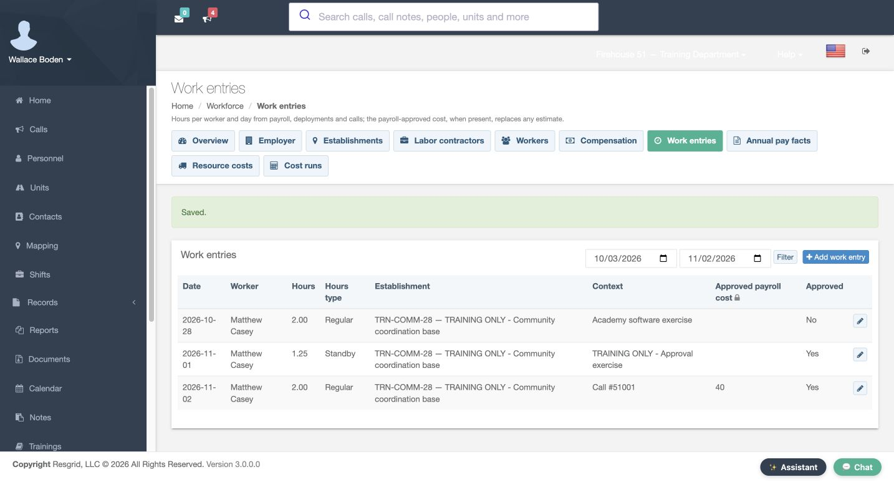
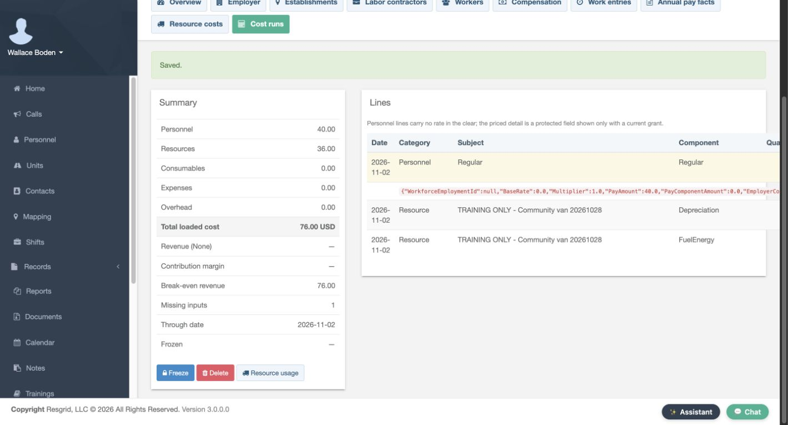
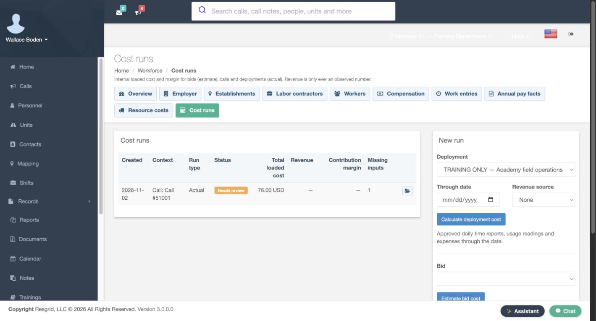
Practice
Compare an approved payroll input and review the result
Step 9
Adapt the exercise to department operations
These controls can support security patrols, search and rescue, wildland contractors, industrial emergency teams, community paramedicine or mental health response, and fire or E M S operations. Use a resource, measurement basis and call context that fit your organization. Verify saved inputs, recalculate after changes, and resolve review items before relying on the result. All amounts here are fictional software inputs, with no external payment, invoice or real payroll import.
Practice
Adapt the exercise to department operations
Examples for your department
- Fire / EMS
- Review the same fictional personnel and resource costing controls using the terminology appropriate to your department.
- Community response
- Review the same fictional personnel and resource costing controls using the terminology appropriate to your department.
- Search and rescue
- Review the same fictional personnel and resource costing controls using the terminology appropriate to your department.
- Security
- Review the same fictional personnel and resource costing controls using the terminology appropriate to your department.
- Wildland
- Review the same fictional personnel and resource costing controls using the terminology appropriate to your department.
- Industrial
- Review the same fictional personnel and resource costing controls using the terminology appropriate to your department.
Transcript
Download transcriptRead the complete transcript
Configure resource costs and compare a call’s loaded cost Audience: Department administrators, Workforce managers, Operational supervisors Open resource profiles and choose the subject In Workforce, open Resource costs, then select Add resource profile. Choose Unit as the Subject type and select the fictional community van. Give the profile a clear Name and check its Effective and Expires dates. The saved example covers October through November and uses U S D. A resource profile prices the selected unit, asset or external resource class. Check that subject before applying rates to an operational resource. Practice: Open resource profiles and choose the subject Configure straight-line depreciation In Depreciation, the example enters an Acquisition cost of ten thousand and a Salvage value of one thousand. Choose Per operating hour as the Allocation basis and enter nine hundred Useful life units. The form gives the straight-line formula: cost minus salvage, divided by life. These fictional inputs produce ten per operating hour. Expected annual utilization is six hundred. Use units that match the chosen basis; this software example does not prescribe an accounting policy. Practice: Configure straight-line depreciation Add consumption-based fuel cost and save Add a Cost components row for Fuel or energy. Use the operating-hour basis, Consumption of two and Unit price of four, with Manual as the Source. That combination produces eight per operating hour. Mark the fictional component and profile Approved, then select Save. The saved profile row shows depreciation of ten and one component. Reopening lets you check the subject, dates, approval and component inputs instead of relying on an unsaved form. Practice: Add consumption-based fuel cost and save Associate approved work hours with the call Open Work entries and add the fictional worker’s two Regular hours on November second. Enter the exercise call number, fifty-one thousand and one, in Call number. Keep the chosen establishment, identify the fictional source, and review Approved before Save. The saved row shows two hours, the call context and Yes. Associating hours with the correct call is essential: an approved work entry without that call relationship would not be the same call-cost input. Practice: Associate approved work hours with the call Find the call calculator and compare the first result Open Cost runs and find Call number with Calculate call cost. This control uses work entries and resource usage recorded against that call and supplies no revenue. The recording retains a before-and-after comparison from this exercise. Its first successful result shows fifty-four in Personnel, zero in Resources and fifty-four total. Two hours at the configured loaded estimate of twenty-seven explain the personnel amount. A zero resource result does not prove the vehicle cost nothing; first check whether usage was recorded. Practice: Find the call calculator and compare the first result Record two operating hours for the same call From the cost result, open Resource usage and add a reading. Select the same community van, the exercise date, Incident as the Phase and Manual as the Source. Enter two Operating hours, then review Approved and Save. The saved usage row confirms two operating hours. This exercise uses operating hours, so it leaves odometer, engine-hour and fuel-quantity inputs empty. Match the recorded measurement to the allocation basis rather than entering the same work into several unrelated meter fields. Practice: Record two operating hours for the same call Recalculate and explain the resource contribution Recalculate the call after saving its usage. The recorded result now shows Personnel of fifty-four, Resources of thirty-six and a total of ninety. The resource contribution is twenty in depreciation plus sixteen in fuel or energy: two hours multiplied by ten and eight. Compare the input quantities and saved result together. A configured resource profile needs corresponding usage before this example contributes a resource amount. Practice: Recalculate and explain the resource contribution Compare an approved payroll input and review the result Return to the same work entry and enter forty in Approved payroll cost, retaining a clearly fictional source. Save and verify forty on the work-entry row, then recalculate. Personnel becomes forty, Resources stays thirty-six and the total becomes seventy-six. The form explains that this approved payroll input replaces the estimate. No payroll system was contacted. The saved result still has one Missing input and is not Frozen; its index says Needs review. Inspect that state before using a total as a finished cost report. Practice: Compare an approved payroll input and review the result Adapt the exercise to department operations These controls can support security patrols, search and rescue, wildland contractors, industrial emergency teams, community paramedicine or mental health response, and fire or E M S operations. Use a resource, measurement basis and call context that fit your organization. Verify saved inputs, recalculate after changes, and resolve review items before relying on the result. All amounts here are fictional software inputs, with no external payment, invoice or real payroll import. Practice: Adapt the exercise to department operations Examples for your department Fire / EMS: Review the same fictional personnel and resource costing controls using the terminology appropriate to your department. Community response: Review the same fictional personnel and resource costing controls using the terminology appropriate to your department. Search and rescue: Review the same fictional personnel and resource costing controls using the terminology appropriate to your department. Security: Review the same fictional personnel and resource costing controls using the terminology appropriate to your department. Wildland: Review the same fictional personnel and resource costing controls using the terminology appropriate to your department. Industrial: Review the same fictional personnel and resource costing controls using the terminology appropriate to your department.